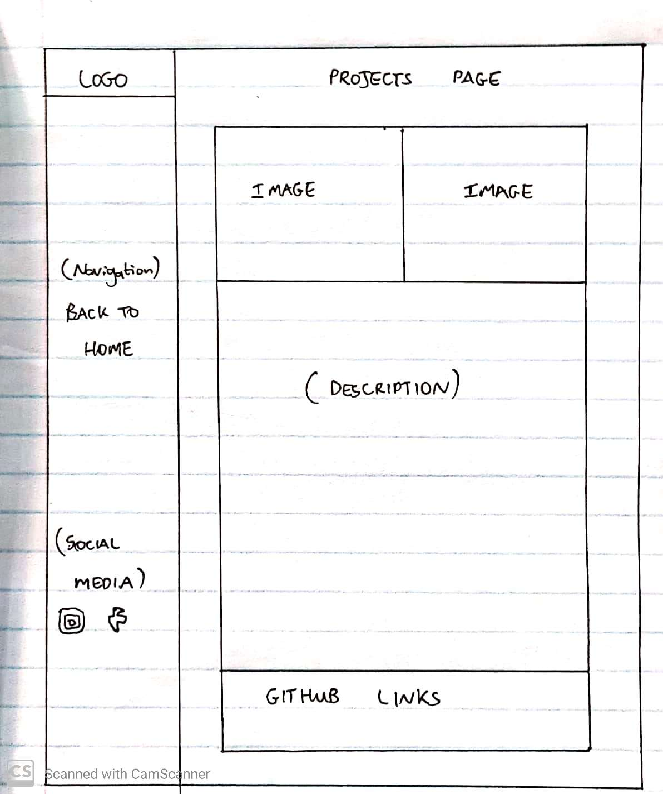
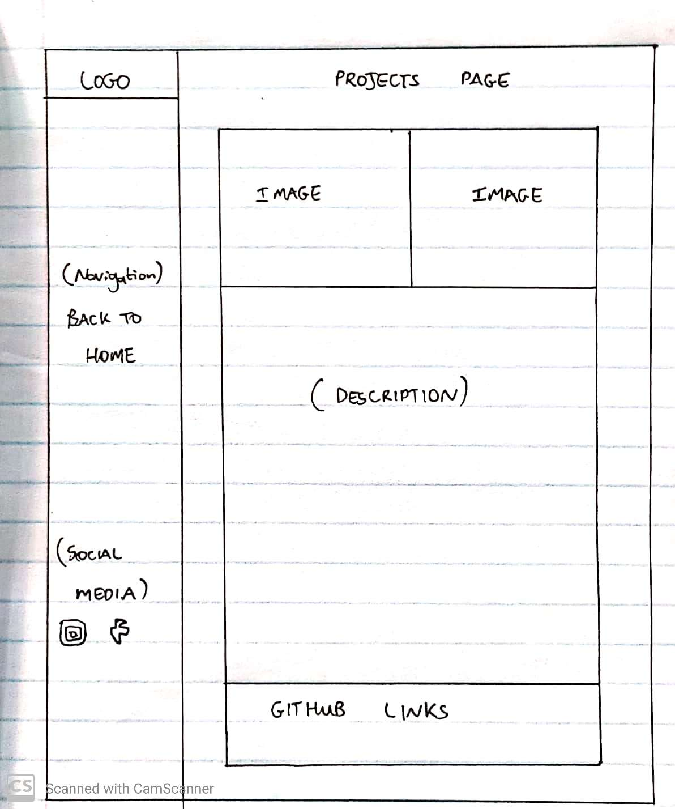

I did research on colour psychology for my colour scheme. Red is used to stimulate the body and mind and to increase blood circulation. Yellow is thought to stimulate the nerves and provoke body purification. Orange is used to heal the lungs and is thought to increase energy levels. Blue is believed to soothe illnesses and treat pain. I then did further research on blue. It turns out that people often describe blue as the colour of stability and safety. This is the idea that I wanted to portray through my website. As a portfolio website, I want potential employers to have a sense of stability and trust when they view my website. It was decided to use #00ccff as my shade of blue. This specific shade was chosen because it is a light blue that is aesthetically pleasing and not ‘harsh’ to look at.
Background Images:
The images used in my background were chosen for two reasons. The first reason was to portray a passion for digital design. The images are of laptop screens with code on them. The simple use of these images changed the entire look of the website. The images tied together the idea of my passion for the digital era and digital design. The second reason that they were chosen was to unify the colour scheme and with the background. This can be seen because the images have cool colours such as blue and some purple. This fused well with my chosen colour scheme. It is also important to note that all the images chosen are copyright free and were downloaded on Unsplash.com.
UI and Navigation:
The user-interface of the website was designed to be interactive as well as aesthetically pleasing. When a user hovers over certain elements it gives them visual clues that they can interact with these elements. For example the navigation bar on the left side has hyperlinks that can be clicked on. When the user hovers over a heading, the heading increases in size and turns from white to blue. This indicates that they can be clicked. Once clicked the page will scroll to the selected heading. This navigation was implemented because it gives the user more control and makes the website easier to use. Other elements such as the hire me button also increase in size when a user hovers over it. I also implemented a colour scroll interface for my blogs. It can be seen that when the user hovers over a blog abstract, the entire card box of that blog turns blue. This makes it easier to read the abstract and also indicates to the user that the box can be clicked to open up the full blog. A different technique was implemented for the portfolio section. In this section, when the user hovers over a project image, the image changes in size and also displays a heading for the project. All of these elements were added to create a smooth and aesthetically pleasing experience that is easy for the user to interact with. Furthermore, I used the Roboto text from Google Fonts because I found it to be aesthetically pleasing and professional.
Technical Reflection:
I believe that my website displays a fair amount of understanding the technical requirements for the course. For example, in my blog posts, I make use of many semantic tags. These include <strong> instead of <bold>, <em> instead of <i> and so on. I also used the <article> tag instead of the <p> tag for my blogs and reflections. The use of these tags creates more meaning for web crawlers to find my website. The content becomes clearer to these crawlers and ultimately helps users find my website. Furthermore, I did make use of the alternate texts for images which make the website more accessible for users using screen readers. I also made use of a few metatags to have a clear link between all the data. My navigation bar fits well on a 100% (or bigger) screen, but I also implemented responsiveness. I implemented the responsive aspect using various limits on the screen width. When the user zooms in, the navigation bar will disappear and a bar icon with 3 lines will be displayed in the top right-hand corner. This saves screen space and also allows the user to use the navigation bar by clicking the top right icon. When the user zooms out, the navigation bar will reappear, and the bar icon will disappear. Furthermore, my hyperlink headings, buttons, and page links all work flawlessly. I have not implemented JavaScript yet because it was not a requirement for this submission.
Creative Reflection:
I think it is fair to conclude that my website displays good use of CSS. For example, on my home section, I implemented the words “DIGITAL DESIGN” using a colour sliding effect. This was done to further emphasis the fact that I am passionate about digital design. My colour scheme is aesthetically pleasing and consistent throughout the various pages. My use of CSS created a pleasing experience for users that have tested my website. The colour changes and scale adjustments when hovering over interactable features gives the user clarity on what they can and cannot interact with. I am happy with my aesthetics for the first submission, but I do predict further improvements for the second. This will be achieved by combining JavaScript and CSS.


 
